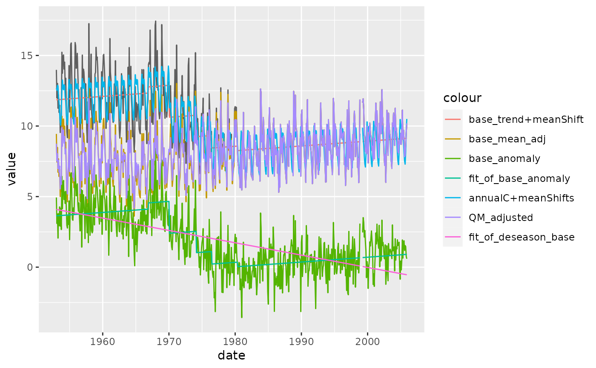

FindUD.RdFindUD
FindUD(
InSeries = NULL,
InCs,
output,
MissingValueCode = "-999.99",
GUI = FALSE,
plev = 0.95,
Iadj = 10000,
Mq = 10,
Ny4a = 0,
is_plot = FALSE
)file path of the input data
A data.frame of detected turning points returned from FindU,
with the columns of c("kind", "Idc", "date", "probL", "probU", "plev", "PFx", "PFx95l", "PFx95h").
prefix of the outputs
string, missing value code
boolean
plev is the nominal level of confidence; (1 - plev) is the nominal level of significance, choose one of the following 6 plev values: 0.75, 0.80, 0.90, 0.95, 0.99, 0.9999
If Iadj = 0, the data series is adjusted to the longest segment; otherwise the data series is adjusted to the chosen segment Iadj (if the given integer Iadj > Ns+1, we re-set Iadj=Ns+1, which corresponds to adjusting the series to the last segment). Set Iadj = 10000 if you want to ensure that the series is adjusted to the last segment
Mq (=0, 1, 2, ..., 20) is the number of points (categories) on which the empirical cumulative distribution function are estimated. If Mq=0, the actual Mq is determined by the length of the shortest segment Mq=1 corresponds to mean adjustments (one adjustment for all data in the same segment).
f = system.file("extdata/Example1.dat", package = "RHtests")
r1 = FindU(f)
r2 = FindUD(InCs = r1$TP, output = "OUTPUT/example1")
print(r2)
#> $fit
#> [data.table]:
#> # A data frame: 636 × 10
#> id date base `base_trend+meanShift` base_mean_adj base_anomaly
#> <dbl> <date> <dbl> <dbl> <dbl> <dbl>
#> 1 1 1953-01-01 14.0 11.9 9.44 4.94
#> 2 2 1953-02-01 12.0 11.9 7.45 3.10
#> 3 3 1953-03-01 13.0 11.9 8.48 3.77
#> 4 4 1953-04-01 11.3 11.9 6.72 2.06
#> 5 5 1953-05-01 12.2 11.9 7.67 3.79
#> 6 6 1953-06-01 11.0 11.9 6.42 2.94
#> 7 7 1953-07-01 11.5 11.9 6.94 4.27
#> 8 8 1953-08-01 9.54 11.9 5.00 2.91
#> 9 9 1953-09-01 10.6 11.9 6.01 4.15
#> 10 10 1953-10-01 9.89 11.9 5.35 2.67
#> # ℹ 626 more rows
#> # ℹ 4 more variables: fit_of_base_anomaly <dbl>, `annualC+meanShifts` <dbl>,
#> # QM_adjusted <dbl>, fit_of_deseason_base <dbl>
#>
#> $TP
#> [data.table]:
#> # A data frame: 5 × 9
#> kind Idc date probL probU plev PFx PFx95l PFx95h
#> <dbl> <chr> <dbl> <dbl> <dbl> <dbl> <dbl> <dbl> <dbl>
#> 1 0 "YifD" 19661100 0.958 0.963 0.95 4.59 13.9 18.7
#> 2 1 "Yes " 19700100 1 1 0.95 49.3 13.2 17.7
#> 3 1 "Yes " 19740200 1 1 0.95 23.4 13.1 17.5
#> 4 1 "No " 19760600 0.995 0.995 0.95 8.26 13.1 17.4
#> 5 0 "YifD" 19800500 0.961 0.972 0.95 5.56 14.3 19.2
#>
plot_output(r2$fit)
